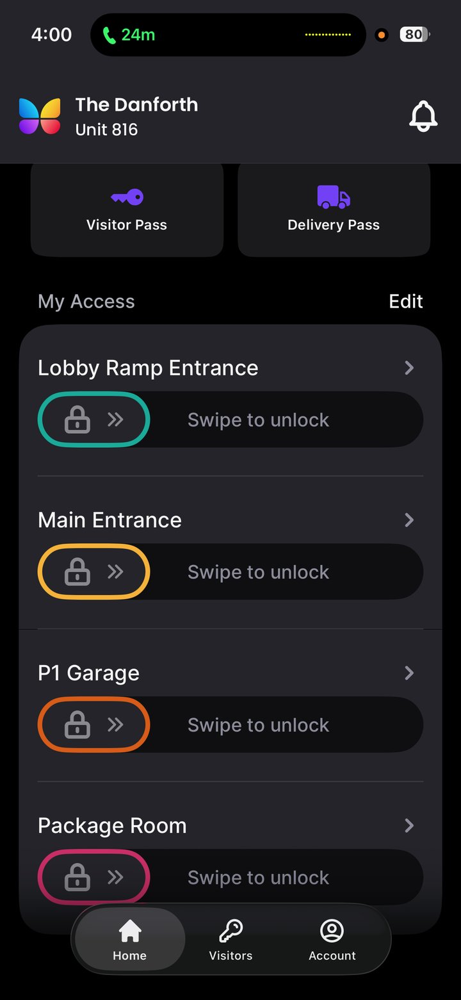

Two ButterflyMX customers interviewed.
Five findings to explore.
I sat down with a Seattle developer who chose ButterflyMX for his property, and a resident who lives with it every day. Two real ButterflyMX customer-led interviews. What follows is what they actually said, what it means for the product, and where I'd take us next.
Two interviews. Two roles. One product to learn from.
Customer-led discovery is the practice of starting with what customers actually do and say, not what we assume about them, and letting that shape product decisions. This brief discovery work demonstrates what even two well-chosen interviews can surface.
Each conversation was a scheduled 30 minutes, recorded with consent. AI was used to transcribe, surface patterns, create this site and provide draft copy. I orchestrated the tools then improved clarity and focus. One participant is a developer; one is a resident. Both live in Seattle.
Even though two interviews can surface real signal, they should not by themselves drive business decisions. Adding the perspective of the integrators, on-site Property Management, and a larger sample size across building types, markets, and tenancies is how I will move insights from "interesting" to "actionable." The closing section names what I'd validate next.
What two conversations surfaced.
Below are the five findings these interviews produced. Each links to its full treatment with quotes, evidence, and the product implication I'd carry into the role.
The Operator made the call. But the decision lived in conversation with Property Management.
The Operator has the capital, the entitlements, the design authority. He's the one signing the contract.
But asked how he chose ButterflyMX, his answer wasn't about features or specs. It was about who he asked first.
The Operator made the call. But before he made it, he asked Property Management what they wanted.
The Operator's account points to Property Management groups — working with the same vendors across competing buildings — as an influential voice in the buying decision, and potentially a deal blocker if they won't support a product. A single operator's experience doesn't establish this as the category pattern, but it's directionally consistent with how this channel tends to operate. More interviews with operators and integrators across markets would sharpen the picture considerably.
Both customers asked for the same thing, in different words.
The Operator volunteered it twice, unprompted. The Resident echoed it without ever having heard the Operator say it. With only two conversations, it's hard to call any finding definitive — but this is the most resonant convergence the two interviews produced.
The Operator is asking for a unified back-of-house: one vendor, one contract, one support call. The Resident is asking for a unified front-of-house: one app, one place to look, one fewer thing to download.
Same gap. Different ends of the same product. The Operator voice surfacing operational fragmentation. The Resident voice surfacing cognitive fragmentation. Two perspectives, independently named — a stronger signal than either alone, though still two data points.
Users value the app's simplicity and reliability — but there's opportunity to help them even more.
The Resident's account of living with the ButterflyMX app is, in the simplest terms, restrained praise. He doesn't think about it much. It doesn't get in his way. It does what he needs it to do. He sent the screenshot below unprompted near the end of the interview, while walking through his actual usage.

In his own words, the Resident called the app "fast enough and nice enough that I don't think it adds drag to the experience." That's restrained praise — but it's praise. The product gets out of his way, and his usage pattern reflects that confidence.
The opportunity is in what sits just behind the simplicity. The same Resident who finds the basics frictionless also revealed real confusion about how parts of the system work — specifically the elevator integration:
And about which doors and readers are ButterflyMX versus other systems in the building:
For the Resident, the package experience dominates in-app use — and points toward a clear expansion opportunity.
95% of the Resident's ButterflyMX engagement happens at the Package Room door. It's the only door he can't open with his fob. So when he gets a package, he opens the app.
What happens after he opens it is where the experience falls apart — and almost none of it is ButterflyMX's fault directly.
But the more interesting signal is what the Resident does not use ButterflyMX for. The property also has a parcel locker system from Package Concierge that delivers a meaningfully better experience for individual packages:
The locker only fails because it can't keep up with the building's volume — overflow lands in the ButterflyMX-controlled room, where the dysfunction starts.
Importantly, the Resident barely uses the Package Concierge app either. Once registered, the experience runs on text-and-barcode. He has three apps installed for one building, uses one of them, and prefers a workflow that bypasses the apps entirely.
A proposed framework for where AI belongs in the product. Context is critical.
AI in access and security is high-stakes territory. Done well it compounds operator efficiency, reseller reach, and resident experience. Done poorly it accelerates the surveillance critique this category has been navigating for years and damages resident trust where trust is the product.
What follows is a priority-ordered framework for introducing AI to a security and access control product — drawn from these two interviews and from industry knowledge of where adjacent platforms have moved. Not a definitive position. A starting point for a conversation worth having.
If the pattern holds more broadly, Property Management is a critical channel — and AI that makes their job faster, sharper, and more confident is a high-leverage investment. The most concrete near-term version is AI layered on ButterflyMX's Security Cameras — anomaly surfacing, searchable footage, and sharper package-room identification that turns passive video into the few moments an operator actually acts on. Largely greenfield in this category. Plausible direct lift on retention.
The Operator uses a low-voltage consultant for install and post-warranty service. He couldn't remember their name. The installer is invisible to the Operator but central to the product's actual deployment. AI that lets a reseller quote, configure, and install ButterflyMX faster compounds across every job they win.
The Resident described real confusion about how the elevator integration works and which doors are ButterflyMX versus other systems. In-app help that can actually answer "how do I give the dog walker scheduled access?" using the building's real configuration is a resident-facing AI play that adds value without crossing any sensitive lines. Same for package handoff, visitor flow education, and onboarding.
Facial recognition at the door, chatbot-handled visitor approval, algorithmic permissioning that bypasses human judgment. The Resident's resistance here was the most articulate position he took in the interview — and he isn't anti-AI in general:
The cost of getting this wrong is asymmetric — surveillance critique damages the category, not just one feature. Move slowly. Keep humans in the loop. The test: does this AI make a decision a resident would otherwise make themselves?
About the person who put this together.
For the last eight years I've been Head of Product at Deako Lighting — a connected-home company that designs and ships its own hardware, firmware, app, and cloud as a single integrated stack. I own the whole arc: I set strategy with the CEO and board, and I build and lead the team that runs execution across product, design, and CX. The strategy and the work that ships it are one job to me, not two.
The center of that work is the full stack, developed end to end — switches and sensors on one end; the app, APIs, and cloud on the other; firmware in between. The decisions I care most about live where those meet: what runs locally versus in the cloud, what has to work without internet, how memory, radio, thermal, and cost constraints shape what the software can promise. Designing products that are elegant, easy to install, and solve real pain points is the discipline I know most deeply.
Hardware is only half of it. Deako sells B2B, B2C, and B2B2C at once, so I've spent years inside the channel dynamics that decide whether a building product gets specified and installed — and the CX to Product feedback loop I built is the same customer-led instinct behind this site. They're the same four user types ButterflyMX serves — residents, operators, installers, and visitors — at a different corner of the same industry.
I'm interviewing for Director, Product Management — Core Access & Security at ButterflyMX because the company's public direction — a category-leading platform expanding from intercom into security cameras, AI, and unified property access — is the work I already do. The proptech adjacency, the installer-experience focus, the connected-hardware and IoT depth, the AI-forward thinking — these aren't ambitions I'm reaching toward. They're my day job.
This site exists because I wanted to demonstrate that rather than describe it.
- Scaled the portfolio from ~$70K to ~$31M annual run-rate at ~43% YoY growth
- Shipped 25M+ units into ~300,000 homes, including a 10M+ modular connector platform that lets non-electricians swap connected hardware in seconds under constant power
- Ran the full hardware development lifecycle — EVT/DVT/PVT, DFM, contract manufacturing, UL/FCC and NEC compliance — across Thread, Matter, Zigbee, BLE, and Wi-Fi
- Own the software platform end to end — resident app, cloud, and APIs with OTA and fleet management — across 8–10k new deployments a month at better-than-industry engagement
- Built and led a product and design team (2–4) and a CS/CX org (4–6) from scratch — managing PMs and designers for eight years — with a CX to Product feedback loop turning install data, support tickets, and reviews into roadmap decisions (~97% CSAT, 4.56★ average product review, NPS ~9)
- Run a B2B / B2C / B2B2C model — ~85% of revenue through builder, pro, and distributor channels at ~75% gross margin; standardized with America's largest homebuilder
- Inventor on one issued US patent (US20230419672A1); additional patents pending
- Leading Deako Intelligence — a privacy-first, on-device AI platform that learns a household's patterns via mmWave sensing (no cameras) and turns its switches into an intelligent intercom; now in early preview
- Own R&D strategy for radar, camera, and environmental sensors — sensor fusion and privacy-first architecture
- Built an AI customer-research engine that turns demographics, pain points, and competitive landscape into product requirements — and deliver full UI mockups and specs to engineering, testing features myself before handoff
- ~$50M annual revenue, 15,000+ orders/day, 99.95% uptime
- Delivered enterprise integrations for a Fortune 50 retailer, a major creative software company, and a top consumer photo platform
- Owned the platform's architecture and schema — how systems communicate and integrate, where customization versus interpretation lives, and the split between order distribution and manufacturing; built to support future M&A and factory onboarding
- Process Delivery Manager — True System Designers, a physical security design consulting firm (2008–2010)
- Custom Low Voltage Technician — Arrausing Sights & Sounds, a custom AV, security & automation integrator (2006–2008)
- BA, Technology Management — Gettysburg College (computer science, physics, mathematics, management, and psychology combined into one major)
- nathan.diehl@outlook.com
- Phone
- 206-293-2054
- linkedin.com/in/n-diehl
- Location
- Seattle, WA